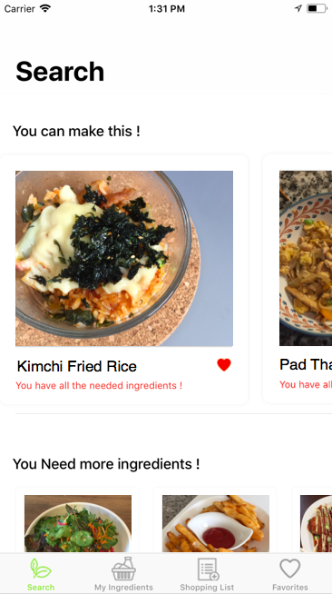
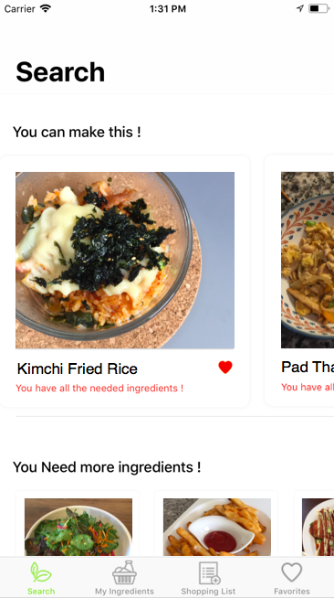
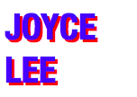
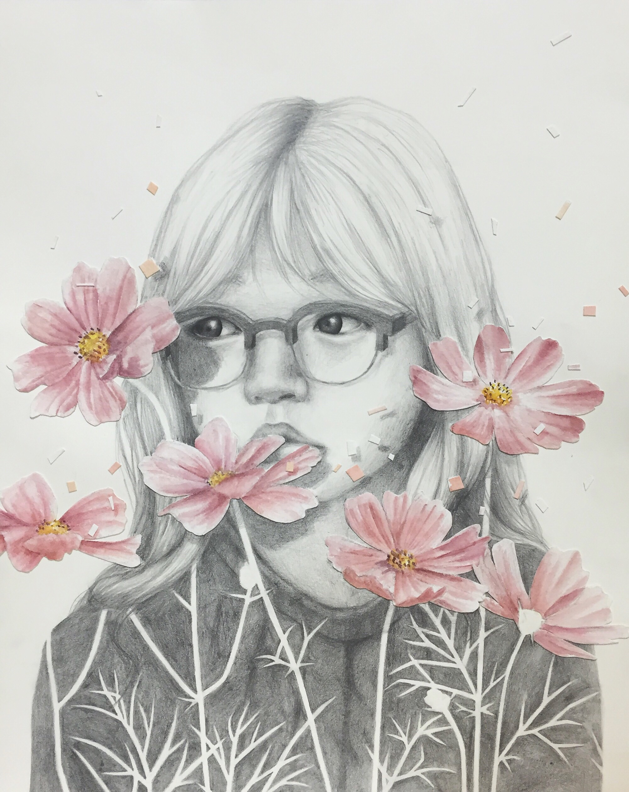
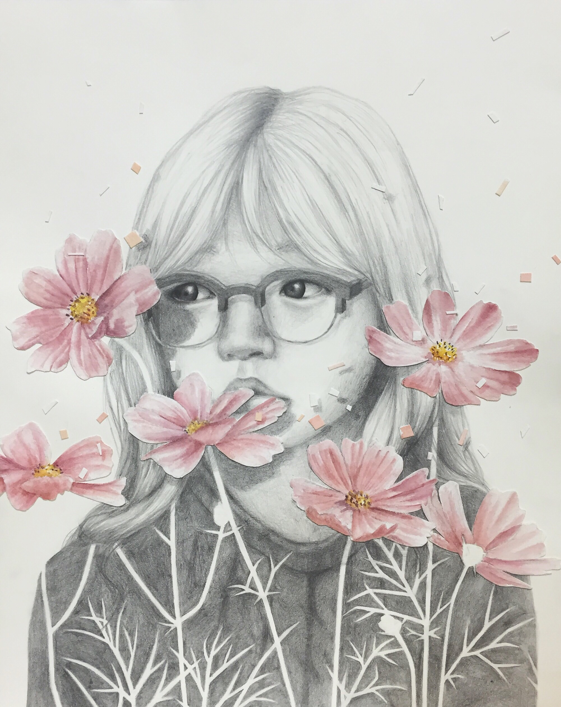

PERSONAL PROJECTS
EAT: Eat in All the Time

Denver, Colorado
Ann Arbor, Michigan
Eat is an iOS application that produces a list of potential recipes based on a list of ingredients the user inputs into the app. Filled with our personal favorite recipes. Developed in Swift and designed by college students, for college students.
EAT: Eat in All the Time

Denver, Colorado
Ann Arbor, Michigan
Eat is an iOS application that produces a list of potential recipes based on a list of ingredients the user inputs into the app. Filled with our personal favorite recipes. Developed in Swift and designed by college students, for college students.
FABLE FIRE

Lund Universitet, Sweden
Partnered with a rural house museum to construct a portable, candle-shaped object that uses RFID technology to add an interactive aspect to the museum. The object was designed based on the needs of the museum, including limited electricity, ease of use, portability, and the ability for the user to guide themselves through the museum without a tour guide. Currently being used in the museum!
JOYYLEE.GITHUB.IO

Ann Arbor, MI
My first website. Designed and coded completely in HTML, CSS, and Javascript. Features the personal projects recently worked on and the designs finished for organizations on campus


 
